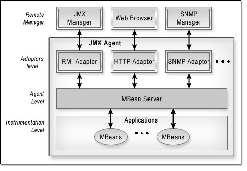

As per JMX specification, JMX architecture is divided into three levels:
Instrumentation level
Agent level
Adaptors level
A diagram representing the JMX architecture is shown below:

The instrumentation level defines an entity known as an MBean. MBeans
represent the managed resources. Thus, the instrumentation level provides
a way to access the managed resources (application) via these MBeans. The
Adaptors level is not completely defined in the JMX specification. This
level contains the components which help in communicating the MBeans. These
components are called protocol adaptors and connectors. The agent level contains
the component called MBeanServer which aids in the communication between the
adaptors level and the instrumentation level. The agent level also provides
a set of services that can be used by the management clients.
In the above architecture diagram, an additional layer called Remote Manager
is shown. This layer is where the managers reside. These managers
allow user to view the management information and also to manage the resource.
The managers will communicate with the Adaptors level using a common
protocol. The JMX Manager and the RMI Adaptor communicate using RMI
protocol. The Web browser and the HTTP Adaptor communicate using HTTP
Protocol. The SNMP Manager and the SNMP Adaptor communicate using SNMP
Protocol.